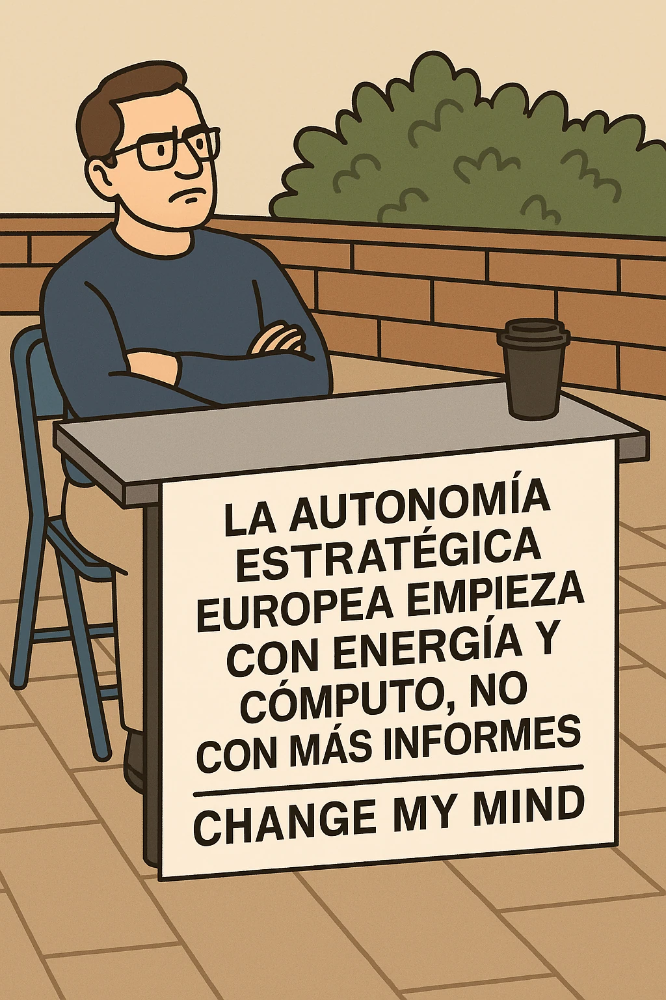

estrategIA #107 ·
Europa necesita energía y ordenadores
El contexto
«Change my mind» invita a rebatir lo que dice el cartel. La afirmación resume una idea del artículo: para depender menos de proveedores extranjeros, Europa necesita energía y ordenadores capaces de ejecutar IA. Escribir estrategias no construye por sí solo esas instalaciones.
Publicado en: estrategIA #107 — El nuevo orden de la inteligencia artificial: energía, poder y razonamiento en el State of AI 2025
Leer el texto de la imagen
LA AUTONOMÍA ESTRATÉGICA EUROPEA EMPIEZA CON ENERGÍA Y CÓMPUTO, NO CON MÁS INFORMES CHANGE MY MIND